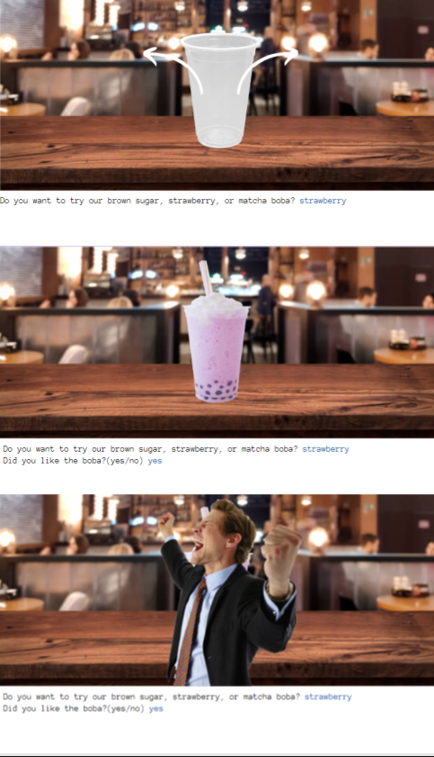

Home
Portfolio
About Me
This is my Portfolio Page!

Project 1.1.9! Welcome to our boba shop. ૮ ˶ᵔ ᵕ ᵔ˶ ა

In this interactive game, the user can choose what kind of boba they want, which will then populate the boba of their choice onto their screen.
The user is then prompted to answer whether they liked the boba or not, and depending on their response, they are met with a different stock photo reaction.
Project 1.2.5! Become a Piano Composer. ♪ ♫ ğŸ§

In this game, the user uses keys that correspond with notes they are prompted to type in order to move notes across the score.
There are two different difficulty levels, and different scales to play will populate based on the level. ğŸ¹
>Scratch project! Bake a cake with us. ଘ(à©*ˊᵕˋ)à©* ੈ♡‧₊˚┌iii┐♡
In this game, the user is prompted to build a cake and is rated at the end on their ability to do so! They will recieve a rating out of three stars.✮✮✮